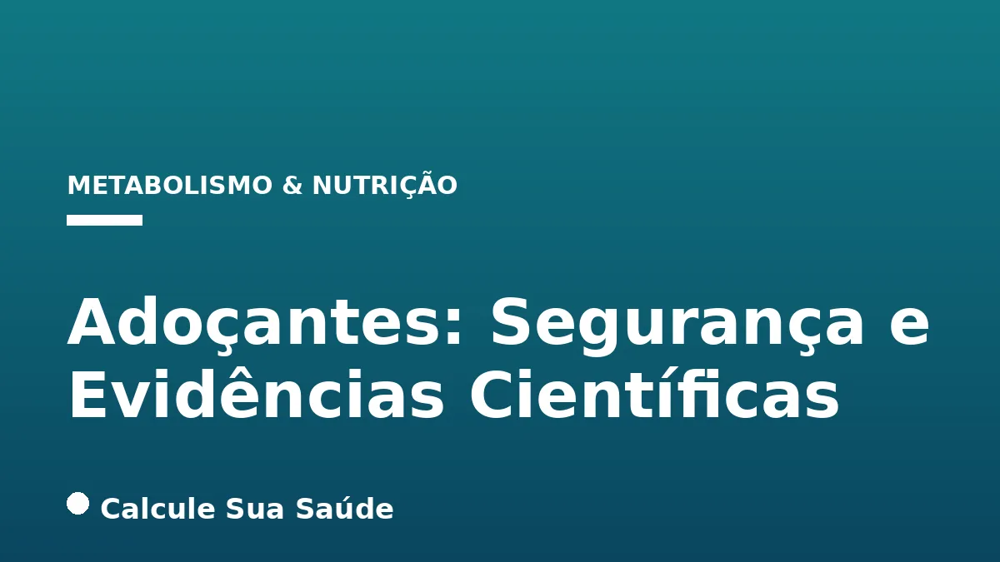

Aviso médico importante
Este conteúdo é educativo e informativo e não substitui a consulta, o diagnóstico ou o tratamento de um profissional de saúde. Em caso de sintomas, procure orientação médica.
Índice do Artigo
- 1. O Que São Adoçantes e Como Funcionam?
- 2. O Papel dos Órgãos Reguladores e a Ingestão Diária Aceitável (IDA)
- 3. A Posição da Organização Mundial da Saúde (OMS) sobre Adoçantes
- 4. Adoçantes e Controle de Peso: Uma Relação Complexa
- 5. Impacto dos Adoçantes no Metabolismo e Risco de Diabetes Tipo 2
- 6. Adoçantes e Doenças Cardiovasculares: O Que Dizem os Estudos?
- 7. Adoçantes e Câncer: Desvendando o Mito e a Realidade
- 8. A Microbiota Intestinal e os Adoçantes: Uma Conexão Emergente
- 9. Adoçantes e Saúde Cognitiva: Novas Preocupações
- 10. Outros Efeitos Potenciais e Contraindicações Específicas
- 11. Diretrizes e Recomendações para o Consumo Consciente
- 12. Mitos e Verdades sobre os Adoçantes: Uma Análise Científica
- 13. Panorama do Consumo de Adoçantes no Brasil
- 14. Como Reduzir o Consumo de Açúcar e Adoçantes de Forma Saudável?
- 15. Conclusão: Navegando no Cenário dos Adoçantes com Evidência
- 16. Perguntas frequentes
No cenário atual da saúde e nutrição, a busca por alternativas ao açúcar tem impulsionado o consumo de adoçantes, também conhecidos como edulcorantes. Esses aditivos alimentares, que conferem sabor doce com baixo ou nenhum valor energético, são amplamente utilizados em produtos dietéticos e light, visando auxiliar no controle de peso e na prevenção de doenças relacionadas ao consumo excessivo de açúcar. Contudo, a segurança e os efeitos a longo prazo desses substitutos têm sido objeto de intenso debate científico e de crescentes preocupações por parte de órgãos de saúde globais.
A complexidade da discussão reside na diversidade dos tipos de adoçantes disponíveis e na variabilidade dos resultados encontrados em diferentes estudos. Enquanto alguns apontam para benefícios no manejo de condições como o diabetes, outros levantam alertas sobre potenciais riscos à saúde metabólica, cardiovascular e até mesmo cognitiva. É fundamental, portanto, analisar as evidências com rigor científico, distinguindo associações de causalidade e compreendendo as nuances das recomendações de saúde pública.
Este artigo aprofundado, baseado nas mais recentes evidências científicas e diretrizes de órgãos reguladores, tem como objetivo desmistificar o tema dos adoçantes. Abordaremos sua classificação, os mecanismos de ação, os potenciais impactos na saúde humana e as recomendações atuais para um consumo consciente e informado. Nosso compromisso é fornecer informações claras e embasadas para que você possa tomar decisões mais saudáveis para sua vida.
Em resumo
- Adoçantes são aditivos que substituem o açúcar, divididos em nutritivos (calóricos), não nutritivos (não calóricos) e polióis.
- A segurança é avaliada pela Ingestão Diária Aceitável (IDA), mas a OMS desaconselha o uso de adoçantes não calóricos para controle de peso a longo prazo, exceto para diabéticos.
- Evidências sobre ganho de peso, diabetes tipo 2, doenças cardiovasculares e microbiota intestinal são conflitantes ou indicam associações que requerem mais estudos.
- Não há comprovação de que adoçantes causem câncer em humanos, embora estudos observacionais levantem questões para alguns tipos em doses elevadas.
- O Ministério da Saúde do Brasil e a OMS recomendam a redução do açúcar e a cautela com adoçantes, priorizando alimentos naturais.
- A recomendação da OMS é condicional, indicando a necessidade de mais pesquisas robustas para estabelecer causalidade e diretrizes definitivas.
1. O Que São Adoçantes e Como Funcionam?
Adoçantes, ou edulcorantes, são substâncias adicionadas a alimentos e bebidas para conferir sabor doce, substituindo total ou parcialmente o açúcar (sacarose). Sua principal característica é a capacidade de adoçar em concentrações muito menores que o açúcar, resultando em um baixo ou nenhum valor calórico. Essa propriedade os torna atraentes para indivíduos que buscam reduzir a ingestão de calorias ou controlar os níveis de glicose no sangue.
Adoçantes Nutritivos (Calóricos)
Os adoçantes nutritivos, embora forneçam calorias, geralmente o fazem em menor quantidade que o açúcar. O aspartame é um exemplo clássico, composto por dois aminoácidos (ácido aspártico e fenilalanina) e adoça cerca de 200 vezes mais que a sacarose. Por ser metabolizado pelo corpo, ele libera calorias, mas a pequena quantidade necessária para adoçar um alimento faz com que sua contribuição calórica total seja mínima.
Adoçantes Não Nutritivos (Não Calóricos)
Esta categoria inclui a maioria dos adoçantes mais conhecidos e utilizados, como sacarina, ciclamato, sucralose, estévia e acessulfame K. Eles não fornecem calorias significativas, pois não são metabolizados ou são absorvidos em quantidades desprezíveis pelo organismo. A estévia, por exemplo, é um adoçante de origem natural, extraído da planta Stevia rebaudiana, enquanto outros são sintéticos. Sua alta intensidade de doçura permite o uso em quantidades mínimas.
Polióis (Álcoois de Açúcar)
Polióis como eritritol, xilitol, sorbitol e maltitol são um grupo distinto de adoçantes. Eles são carboidratos que possuem uma estrutura química semelhante a álcoois e açúcares. São frequentemente usados como adoçantes de volume em produtos como gomas de mascar, doces e produtos de panificação, contribuindo com menos calorias que o açúcar e não promovendo cáries. A Organização Mundial da Saúde (OMS), em sua recomendação de 2023, não os incluiu devido à escassez de estudos robustos sobre seus efeitos a longo prazo.
2. O Papel dos Órgãos Reguladores e a Ingestão Diária Aceitável (IDA)
A segurança dos adoçantes é rigorosamente avaliada por órgãos reguladores em todo o mundo antes que possam ser aprovados para uso em alimentos. No Brasil, a Agência Nacional de Vigilância Sanitária (ANVISA) é a responsável por essa regulamentação. Essas agências baseiam suas decisões em extensos estudos toxicológicos e de segurança.
Um conceito chave nessa avaliação é a **Ingestão Diária Aceitável (IDA)**. A IDA representa a quantidade de uma substância que pode ser consumida diariamente ao longo da vida sem apresentar risco significativo para a saúde. É calculada a partir de estudos em animais, onde se determina a dose sem efeito adverso observado (NOAEL), e então essa dose é dividida por um fator de segurança, geralmente 100, para garantir uma margem ampla de segurança para humanos. Este fator de 100 leva em conta as diferenças de sensibilidade entre espécies e entre indivíduos na população humana.
A ANVISA, por exemplo, autoriza o uso de edulcorantes em alimentos, estabelecendo limites máximos de uso com base na IDA definida pelo JECFA (Comitê Misto FAO/OMS de Especialistas em Aditivos Alimentares), um órgão internacional de referência. É importante notar que a IDA é um valor conservador e que o consumo ocasional acima da IDA não implica necessariamente em risco imediato, mas o consumo crônico e elevado pode ser motivo de preocupação.
3. A Posição da Organização Mundial da Saúde (OMS) sobre Adoçantes
Em maio de 2023, a Organização Mundial da Saúde (OMS) emitiu uma diretriz que gerou ampla discussão no campo da saúde pública. A OMS desaconselhou o uso de adoçantes não calóricos (NSS, na sigla em inglês) para o controle de peso ou para reduzir o risco de doenças crônicas não transmissíveis, como diabetes tipo 2 e doenças cardiovasculares, em adultos e crianças. Esta recomendação se baseou em uma revisão sistemática de evidências que sugerem que a substituição de açúcares livres por adoçantes sem açúcar não apoia o controle de peso a longo prazo e pode estar associada a um risco aumentado de alguns desfechos negativos.
É crucial entender que esta é uma **recomendação condicional**. Isso significa que as evidências que a sustentam não são consideradas fortes o suficiente para uma recomendação universal e que a própria OMS sugere ampla discussão e consideração das circunstâncias locais antes de sua implementação como medida de saúde pública. A exceção a essa recomendação é para pessoas com diabetes preexistente, para as quais o uso de adoçantes pode ser uma ferramenta útil no manejo da glicemia.
A diretriz da OMS enfatiza que o foco principal deve ser a redução geral da doçura na dieta e a substituição de adoçantes e açúcares por fontes naturais de doçura, como frutas, e por bebidas não açucaradas. A ANVISA, em conjunto com o Ministério da Saúde e outras instituições brasileiras, está avaliando a nova diretriz da OMS para determinar suas implicações para a regulamentação e as recomendações de saúde no Brasil.
4. Adoçantes e Controle de Peso: Uma Relação Complexa
Um dos principais atrativos dos adoçantes é sua promessa de auxiliar na perda ou manutenção de peso, oferecendo o sabor doce sem as calorias do açúcar. No entanto, a ciência apresenta um cenário mais complexo e, por vezes, contraditório.
Estudos observacionais e a própria revisão da OMS sugerem que os adoçantes podem não ter benefício a longo prazo na redução de gordura em adultos e crianças. Alguns estudos até indicam uma associação entre o consumo de adoçantes e o aumento de peso. As hipóteses para isso incluem a desregulação do metabolismo da glicose e da saciedade, ou o fato de que adoçantes são frequentemente encontrados em alimentos ultraprocessados, que por si só são associados ao ganho de peso.
Por outro lado, metanálises e revisões sistemáticas também mostram que o uso de adoçantes de baixas calorias, quando usados em substituição ao açúcar, pode favorecer a redução do índice de massa corporal (IMC), gordura corporal e circunferência da cintura em alguns contextos. Isso sugere que, como ferramenta de substituição calórica, eles podem ter um papel, mas sua eficácia a longo prazo e o impacto em padrões alimentares gerais ainda são objeto de pesquisa. A recomendação da OMS, portanto, reflete a cautela diante da falta de evidências robustas de benefício sustentável para o controle de peso.
5. Impacto dos Adoçantes no Metabolismo e Risco de Diabetes Tipo 2
A relação entre adoçantes e o desenvolvimento de diabetes tipo 2 é uma das áreas mais investigadas e preocupantes. Embora adoçantes sejam frequentemente recomendados para diabéticos como alternativa ao açúcar, estudos observacionais de longo prazo têm associado o uso prolongado de adoçantes não calóricos a um risco aumentado de desenvolver a doença em adultos.
Os mecanismos propostos para essa associação incluem alterações na microbiota intestinal, que podem impactar a tolerância à glicose, e a possível desregulação da resposta metabólica do corpo ao sabor doce sem a correspondente ingestão calórica. Por exemplo, a sucralose, em alguns estudos, foi associada à hiperinsulinemia (níveis elevados de insulina no sangue), o que pode levar à resistência à insulina ao longo do tempo. Outras pesquisas sugerem que o consumo de adoçantes pode alterar a percepção do paladar, levando a um desejo maior por alimentos doces e, consequentemente, a um maior consumo calórico geral.
As sociedades médicas brasileiras, como a Sociedade Brasileira de Diabetes (SBD), a Sociedade Brasileira de Endocrinologia e Metabologia (SBEM) e a Associação Brasileira para o Estudo da Obesidade e Síndrome Metabólica (ABESO), interpretaram a recomendação da OMS com cautela. Elas enfatizam que a OMS não sugere que pacientes diabéticos substituam adoçantes por açúcar, mas sim que busquem alimentos mais saudáveis e menos processados. Para pacientes com diabetes, os adoçantes ainda podem ser uma estratégia útil para evitar picos glicêmicos, mas a moderação e a busca por uma dieta equilibrada são primordiais.
6. Adoçantes e Doenças Cardiovasculares: O Que Dizem os Estudos?
Além do diabetes, a saúde cardiovascular é outra área onde o consumo de adoçantes tem sido investigado. Estudos observacionais de grande escala têm apontado para uma possível associação entre o uso prolongado de adoçantes não calóricos e um risco aumentado de doenças cardiovasculares, incluindo eventos como infarto e acidente vascular cerebral (AVC), e até mesmo mortalidade em adultos, especialmente em pessoas idosas.
Essas associações, no entanto, são complexas e não estabelecem causalidade direta. Os pesquisadores consideram que fatores de confusão, como o estilo de vida geral dos consumidores de adoçantes (que podem já ter condições de saúde preexistentes ou consumir mais alimentos ultraprocessados), podem influenciar esses resultados. A OMS, em sua diretriz de 2023, incluiu a redução do risco de doenças crônicas não transmissíveis, como as cardiovasculares, em sua recomendação de desaconselhar o uso de adoçantes não calóricos para a população em geral.
Ainda são necessários ensaios clínicos randomizados de longo prazo para elucidar se os adoçantes têm um efeito direto e independente sobre a saúde cardiovascular ou se as associações observadas são mediadas por outros fatores. Por enquanto, a cautela e a priorização de uma dieta rica em alimentos naturais e minimamente processados são as abordagens mais seguras para a prevenção de doenças cardiovasculares.
7. Adoçantes e Câncer: Desvendando o Mito e a Realidade
A preocupação de que adoçantes possam causar câncer é um dos mitos mais persistentes e temores mais comuns associados a essas substâncias. Essa preocupação surgiu principalmente de estudos antigos realizados em ratos, onde doses extremamente elevadas de certos adoçantes, como a sacarina e o ciclamato, foram associadas ao desenvolvimento de tumores.
No entanto, a grande maioria das instituições de saúde e pesquisa em câncer, como o Cancer Research UK e o National Cancer Institute dos Estados Unidos, afirmam que não há comprovação consistente de que os adoçantes causem câncer em humanos nas doses normalmente consumidas. As doses utilizadas em estudos com animais eram muitas vezes milhares de vezes maiores do que a Ingestão Diária Aceitável (IDA) para humanos, e os mecanismos de desenvolvimento de câncer em ratos podem não ser diretamente aplicáveis a humanos.
Apesar disso, alguns estudos de coorte mais recentes, que acompanham grandes populações ao longo do tempo, têm apontado para um possível risco aumentado para o aspartame e o acessulfame-K em relação a certos tipos de câncer. É importante ressaltar que esses estudos são observacionais, o que significa que eles podem identificar associações, mas não podem provar causalidade. Fatores de confusão, como o estilo de vida e a dieta geral dos participantes, são difíceis de controlar completamente. A comunidade científica continua a monitorar e pesquisar essa área, mas, até o momento, o consenso geral é de que os adoçantes aprovados são seguros dentro dos limites da IDA.
8. A Microbiota Intestinal e os Adoçantes: Uma Conexão Emergente
A microbiota intestinal, o conjunto de trilhões de microrganismos que habitam nosso intestino, desempenha um papel crucial em diversas funções fisiológicas, incluindo o metabolismo, a imunidade e até mesmo a saúde mental. Pesquisas recentes têm explorado como os adoçantes podem interagir com essa complexa comunidade microbiana.
Estudos em animais e alguns estudos preliminares em humanos sugerem que certos adoçantes, como a sacarina e a sucralose, podem alterar a composição e a função da microbiota intestinal. Essas alterações podem, por sua vez, impactar a tolerância à glicose e a sensibilidade à insulina, contribuindo para os potenciais riscos metabólicos observados em algumas pesquisas. A hipótese é que, ao modificar o ambiente intestinal, os adoçantes poderiam influenciar a forma como o corpo processa os nutrientes e regula o açúcar no sangue.
Ainda é uma área de pesquisa em desenvolvimento, e a extensão e a relevância clínica dessas alterações para a saúde humana a longo prazo não estão totalmente claras. A complexidade da microbiota intestinal e a variabilidade individual tornam difícil generalizar os resultados. No entanto, a crescente evidência aponta para a importância de considerar o impacto dos adoçantes no microbioma como um fator potencial em seus efeitos na saúde.
9. Adoçantes e Saúde Cognitiva: Novas Preocupações
A saúde cerebral e a função cognitiva são áreas de crescente interesse na pesquisa sobre adoçantes. Um estudo de 2025, amplamente divulgado, associou o consumo de adoçantes artificiais (com exceção da tagatose) a um declínio cognitivo global mais rápido. Os pesquisadores observaram que os maiores consumidores de adoçantes apresentaram um declínio cognitivo equivalente a 1,6 anos de envelhecimento cerebral adicional.
É fundamental destacar que este estudo, como muitos outros que apontam para potenciais efeitos adversos, é observacional. Isso significa que ele pode identificar associações, mas não estabelece uma relação de causa e efeito direta. Pode haver outros fatores, como condições de saúde preexistentes, estilo de vida ou dieta geral, que influenciam tanto o consumo de adoçantes quanto o declínio cognitivo. Por exemplo, pessoas que já estão preocupadas com sua saúde podem optar por adoçantes e, ao mesmo tempo, já estarem em um estágio inicial de declínio cognitivo ou ter outros fatores de risco.
Os próprios pesquisadores ressaltam a necessidade de mais investigações, incluindo ensaios clínicos randomizados, para confirmar se existe uma relação causal entre o consumo de adoçantes e o declínio cognitivo. Por enquanto, a evidência serve como um alerta para a necessidade de cautela e mais pesquisas nesta área.
10. Outros Efeitos Potenciais e Contraindicações Específicas
Além das preocupações com peso, metabolismo e saúde cardiovascular, outros efeitos potenciais dos adoçantes têm sido investigados:
- Sucralose: Alguns estudos sugerem que a sucralose pode estar associada a hiperinsulinemia, aumento da absorção de glicose no intestino, disfunção da tireoide, parto prematuro, fratura, hiperatividade e insônia. No entanto, esses indícios necessitam de mais comprovação por meio de pesquisas robustas e bem controladas para estabelecer causalidade.
- Polióis (Álcoois de Açúcar): Polióis como xilitol, eritritol e sorbitol são geralmente bem tolerados, mas o consumo em excesso pode causar desconforto gastrointestinal, como inchaço, gases e diarreia, devido à sua absorção incompleta no intestino.
- Aspartame e Fenilcetonúria: O aspartame é contraindicado para pessoas com fenilcetonúria (PKU), uma doença genética rara. Indivíduos com PKU não conseguem metabolizar a fenilalanina, um dos componentes do aspartame, o que pode levar ao acúmulo dessa substância no organismo e causar danos neurológicos graves. Por isso, produtos que contêm aspartame devem exibir um aviso para fenilcetonúricos.
- Gestantes e Lactantes: Embora a maioria dos adoçantes seja considerada segura dentro da IDA, a cautela é recomendada para gestantes e lactantes. A recomendação geral é que essas populações consultem um profissional de saúde antes de consumir adoçantes regularmente, priorizando sempre uma dieta equilibrada e natural.
11. Diretrizes e Recomendações para o Consumo Consciente
Diante da complexidade das evidências, as diretrizes de saúde pública e as sociedades médicas têm se posicionado sobre o consumo de adoçantes, focando na redução geral do açúcar na dieta e na cautela com o uso de seus substitutos.
- Organização Mundial da Saúde (OMS): A principal orientação da OMS é reduzir completamente o açúcar da dieta, optando por alimentos com açúcares naturais, como frutas, ou bebidas não açucaradas. A recomendação de 2023 desaconselha o uso de adoçantes não calóricos para controle de peso ou redução de risco de doenças crônicas não transmissíveis, com exceção para pessoas com diabetes preexistente.
- Ministério da Saúde do Brasil: O Guia Alimentar para a População Brasileira classifica os edulcorantes como ingredientes que caracterizam alimentos ultraprocessados, cujo consumo deve ser evitado. Para crianças menores, a recomendação é ainda mais assertiva: alimentos ultraprocessados não devem ser ofertados, e adoçantes devem ser oferecidos apenas sob indicação de um profissional de saúde.
- Sociedades Médicas Brasileiras (SBD, SBEM, ABESO): Em um posicionamento conjunto de 2023, a Sociedade Brasileira de Diabetes (SBD), a Sociedade Brasileira de Endocrinologia e Metabologia (SBEM) e a Associação Brasileira para o Estudo da Obesidade e Síndrome Metabólica (ABESO) interpretaram a recomendação da OMS com cautela. Elas enfatizam que a OMS não sugere que pacientes diabéticos substituam adoçantes por açúcar, mas sim que busquem alimentos mais saudáveis e menos processados. O consumo excessivo de açúcar é reconhecido como prejudicial, e para diabéticos, os adoçantes podem ser uma ferramenta para evitar picos glicêmicos, sempre dentro de um plano alimentar saudável.
- ANVISA: A Agência Nacional de Vigilância Sanitária (ANVISA) no Brasil continua a autorizar o uso de edulcorantes em alimentos, estabelecendo limites máximos de uso com base na Ingestão Diária Aceitável (IDA) definida pelo JECFA. A ANVISA está avaliando a nova diretriz da OMS em conjunto com o Ministério da Saúde e outras instituições para possíveis atualizações nas regulamentações.
Em resumo, a tônica das recomendações é a moderação, a priorização de alimentos in natura e minimamente processados, e a consulta a profissionais de saúde para orientações personalizadas, especialmente para grupos vulneráveis ou com condições de saúde específicas.
12. Mitos e Verdades sobre os Adoçantes: Uma Análise Científica
A discussão sobre adoçantes é frequentemente permeada por mitos e informações desencontradas. É crucial separar o que a ciência realmente diz das crenças populares. Abaixo, desvendamos alguns dos mitos mais comuns:
| Mito Comum | O Que a Ciência Diz (Realidade) |
|---|---|
| “Adoçantes causam câncer” | Parcialmente mito. Estudos em ratos com doses elevadas levantaram preocupações, mas não há comprovação de que adoçantes causem câncer em humanos nas doses normais. Instituições como o Cancer Research UK e o National Cancer Institute dos EUA afirmam que adoçantes não causam câncer. Alguns estudos de coorte apontaram um possível risco para aspartame e acessulfame-K, mas são observacionais e não provam causalidade. |
| “Adoçante engorda” | Parcialmente mito. A OMS sugere que adoçantes não auxiliam no controle de peso a longo prazo e podem estar associados ao aumento de peso em alguns estudos observacionais. Contudo, metanálises também indicam que o uso de adoçantes de baixas calorias pode ser uma ferramenta útil para o controle de peso ao reduzir a ingestão calórica, favorecendo a redução do IMC, gordura corporal e circunferência da cintura, quando usados em substituição ao açúcar. Mais estudos em humanos são necessários para comprovar essa afirmação de forma definitiva. |
| “Crianças não devem consumir adoçantes” | Parcialmente mito. O consumo pode ser recomendado para crianças com condições de saúde específicas, como diabetes, obesidade infantil ou histórico grave de cárie dentária, sob orientação profissional. No entanto, o Ministério da Saúde do Brasil recomenda que alimentos ultraprocessados (que frequentemente contêm adoçantes) não sejam oferecidos a crianças menores, e que adoçantes sejam utilizados apenas sob indicação de um profissional de saúde. |
| “Adoçantes são seguros para qualquer pessoa” | Parcialmente verdade. Existem doses seguras estabelecidas por agências reguladoras (IDA). Contudo, há contraindicações específicas, como o aspartame para fenilcetonúricos, e cautela é recomendada para gestantes e lactantes. A OMS, em sua diretriz de 2023, desaconselha o uso geral de adoçantes não calóricos para controle de peso na população em geral. |
13. Panorama do Consumo de Adoçantes no Brasil
O Brasil, assim como outros países, tem observado um crescimento no consumo de adoçantes, impulsionado pela busca por produtos com menor teor calórico e pela preocupação com o consumo de açúcar. Dados epidemiológicos fornecem um panorama interessante sobre esse cenário.
Em 2014, a Pesquisa Nacional de Acesso, Utilização e Promoção do Uso Racional de Medicamentos (PNAUM) revelou que a prevalência do uso de adoçantes na população adulta brasileira foi de 13,4%. O uso foi mais comum entre mulheres, indivíduos com 60 anos ou mais, nas regiões Nordeste e Sudeste, em classes econômicas A/B e entre pessoas obesas. Notavelmente, o uso de adoçantes foi maior entre indivíduos que relataram doenças crônicas, especialmente diabetes, e aumentou com o número de comorbidades, o que sugere que o consumo é frequentemente associado a condições de saúde preexistentes.
É importante considerar as limitações desses dados. A pesquisa de 2014 não coletou informações sobre a composição específica do adoçante utilizado (se era aspartame, estévia, etc.), nem sobre o tempo ou a quantidade de uso. Além disso, não diferenciou adoçantes artificiais de naturais como a sacarose (açúcar de mesa) e não considerou o consumo de adoçantes presentes em alimentos processados, o que pode subestimar o consumo real. O mercado de adoçantes alimentares no Brasil foi avaliado em USD 6,01 bilhões em 2025 e estima-se que cresça para USD 7,86 bilhões até 2031, com uma taxa de crescimento anual composta (CAGR) de 4,57% durante o período de previsão (2026-2031), indicando uma tendência de aumento contínuo no consumo.
14. Como Reduzir o Consumo de Açúcar e Adoçantes de Forma Saudável?
Diante das incertezas e das recomendações de cautela, a estratégia mais segura e benéfica para a saúde é reduzir a dependência do sabor doce, seja ele proveniente do açúcar ou de adoçantes. A transição para uma dieta com menos doçura pode ser gradual, mas os benefícios a longo prazo são significativos.
- Priorize Alimentos In Natura: Opte por frutas frescas para adoçar naturalmente. Elas fornecem fibras, vitaminas e minerais, além de saciedade. Água pura, chás sem açúcar e café sem adoçante devem ser as bebidas de escolha.
- Reduza Gradualmente: Se você usa adoçantes regularmente, tente diminuir a quantidade aos poucos. Seu paladar se adaptará com o tempo a níveis menores de doçura.
- Leia os Rótulos: Esteja atento aos ingredientes de produtos industrializados. Muitos alimentos ultraprocessados contêm adoçantes, mesmo aqueles que não são explicitamente comercializados como “diet” ou “light”.
- Cozinhe em Casa: Preparar suas próprias refeições permite controlar a quantidade de açúcar e adoçantes adicionados. Experimente temperos como canela, baunilha ou cardamomo para realçar o sabor sem adicionar doçura.
- Consulte um Profissional: Para pessoas com condições de saúde específicas, como diabetes ou obesidade, um nutricionista ou médico pode oferecer orientação personalizada sobre o uso de adoçantes e estratégias para uma alimentação saudável.
O objetivo final é reeducar o paladar para apreciar os sabores naturais dos alimentos, diminuindo a necessidade de aditivos doces e promovendo uma saúde metabólica mais robusta.
15. Conclusão: Navegando no Cenário dos Adoçantes com Evidência
A discussão sobre a segurança dos adoçantes é um reflexo da complexidade da ciência da nutrição e da saúde pública. Embora ofereçam uma alternativa de baixo teor calórico ao açúcar, as evidências sobre seus efeitos a longo prazo são multifacetadas e, em alguns aspectos, ainda inconclusivas. A recomendação condicional da OMS de 2023 serve como um marco importante, sugerindo cautela e a priorização da redução geral da doçura na dieta.
É evidente que os adoçantes não são uma “bala mágica” para o controle de peso ou a prevenção de doenças crônicas, e seu uso indiscriminado merece atenção. As associações observadas com desfechos como diabetes tipo 2, doenças cardiovasculares e alterações na microbiota intestinal, embora não estabeleçam causalidade, reforçam a necessidade de mais pesquisas robustas e de uma abordagem prudente.
Para a população em geral, a mensagem central é clara: a melhor estratégia para a saúde é uma dieta baseada em alimentos in natura e minimamente processados, com baixa ingestão de açúcares livres e, por extensão, de adoçantes. Para indivíduos com condições de saúde específicas, como diabetes, a decisão sobre o uso de adoçantes deve ser sempre individualizada e orientada por um profissional de saúde, considerando os potenciais benefícios e riscos no contexto de um plano alimentar globalmente saudável. A ciência continua a evoluir, e manter-se informado com base em evidências é o caminho para escolhas conscientes e promotoras de saúde.
16. Perguntas frequentes
Adoçantes causam câncer?
Não há comprovação de que adoçantes causem câncer em humanos nas doses normalmente consumidas. Estudos em animais usaram doses extremamente elevadas, e instituições como o Cancer Research UK afirmam que adoçantes aprovados são seguros. Alguns estudos observacionais levantaram questões sobre aspartame e acessulfame-K, mas não provam causalidade.
Adoçantes ajudam a emagrecer?
A OMS desaconselha o uso de adoçantes não calóricos para controle de peso a longo prazo, pois as evidências não mostram benefício sustentável. Embora possam reduzir a ingestão calórica imediata, alguns estudos observacionais os associam ao ganho de peso, enquanto outros indicam redução de IMC. A relação é complexa e requer mais pesquisa.
Quem tem diabetes pode usar adoçantes?
Sim, para pessoas com diabetes preexistente, os adoçantes podem ser uma ferramenta útil para evitar picos glicêmicos, substituindo o açúcar. No entanto, a OMS e sociedades médicas brasileiras enfatizam que o foco deve ser uma dieta saudável e menos processada, e o uso de adoçantes deve ser orientado por um profissional de saúde.
Adoçantes afetam a microbiota intestinal?
Pesquisas sugerem que alguns adoçantes, como sacarina e sucralose, podem alterar a composição da microbiota intestinal. Essas alterações, por sua vez, podem impactar a tolerância à glicose e a sensibilidade à insulina. Esta é uma área de pesquisa ativa e os efeitos a longo prazo na saúde humana ainda estão sendo investigados.
Quais são os principais tipos de adoçantes?
Os adoçantes são classificados em nutritivos (calóricos, como aspartame), não nutritivos (não calóricos, como sacarina, sucralose, estévia, acessulfame K) e polióis (álcoois de açúcar, como eritritol e xilitol). Cada tipo possui características e metabolismos distintos.
Crianças podem consumir adoçantes?
O Ministério da Saúde do Brasil recomenda que alimentos ultraprocessados, que frequentemente contêm adoçantes, não sejam oferecidos a crianças menores. Adoçantes devem ser usados apenas sob indicação de um profissional de saúde para crianças com condições específicas, como diabetes ou obesidade infantil.
O que é Ingestão Diária Aceitável (IDA)?
A Ingestão Diária Aceitável (IDA) é a quantidade de uma substância que pode ser consumida diariamente ao longo da vida sem risco significativo para a saúde. É um valor de segurança estabelecido por órgãos reguladores com base em estudos toxicológicos e um fator de segurança.
Qual a recomendação geral sobre adoçantes?
A recomendação geral é reduzir a dependência do sabor doce, priorizando alimentos in natura e minimamente processados, como frutas, e bebidas não açucaradas. Para a população em geral, a OMS desaconselha o uso de adoçantes não calóricos para controle de peso a longo prazo, incentivando a redução do açúcar e a moderação.
Leia também
Referências e Fontes
1. Organização Mundial da Saúde (OMS). Diretriz da OMS sobre adoçantes não açucarados. 2023. Disponível em: news.un.org
2. Sociedade Brasileira de Diabetes (SBD), Sociedade Brasileira de Endocrinologia e Metabologia (SBEM), Associação Brasileira para o Estudo da Obesidade e Síndrome Metabólica (ABESO). Posicionamento sobre o consumo de adoçantes artificiais. 2023. Disponível em: diabetes.org.br
3. Agência Nacional de Vigilância Sanitária (ANVISA). Resumo Executivo: Documento de Bases sobre Uso de Edulcorantes. 2024. Disponível em: gov.br
4. Jornal da USP. OMS alerta para o uso de adoçantes em dietas alimentares de adultos e crianças. 2023. Disponível em: jornal.usp.br
5. Jornal da USP. Adoçantes artificiais são associados ao declínio cognitivo acelerado. 2023. Disponível em: jornal.usp.br
6. Associação Brasileira de Nutrição (ASBRAN). Anvisa autoriza novos edulcorantes em alimentos. Disponível em: asbran.org.br
7. Revista Científica Multidisciplinar RECIMA21. Perfil de Segurança dos Edulcorantes em Formulações Farmacêuticas para Pacientes com Diabetes e Resistência à Insulina: Revisão Narrativa. Disponível em: recima21.com.br
8. Revista ABM. Verdades e mentiras sobre os adoçantes. Disponível em: revistaabm.com.br